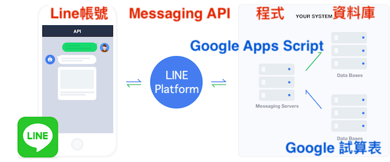
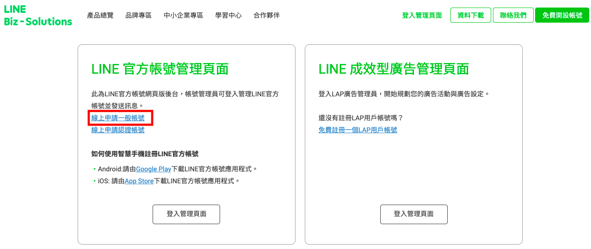
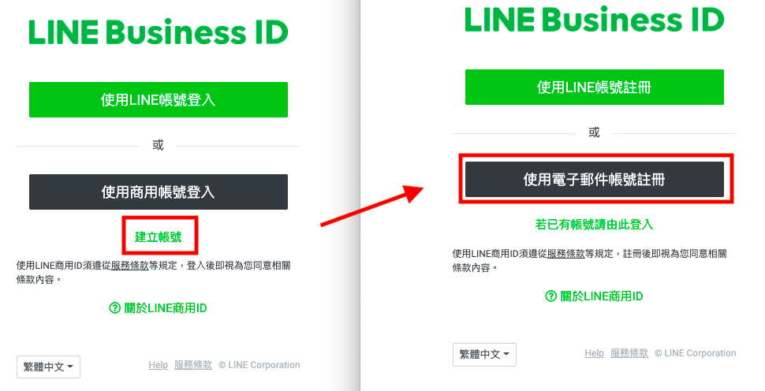
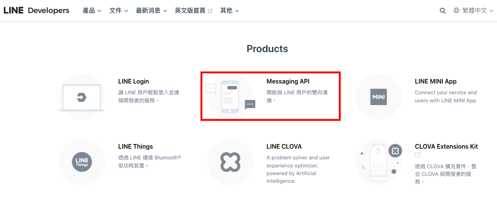
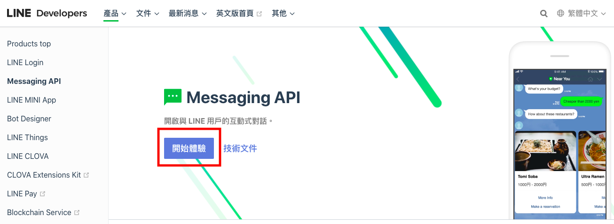
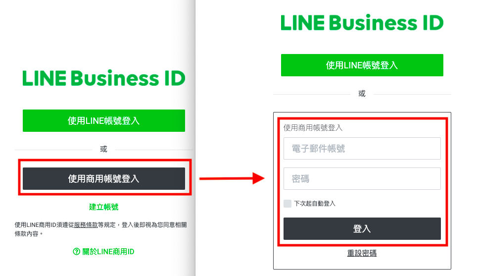
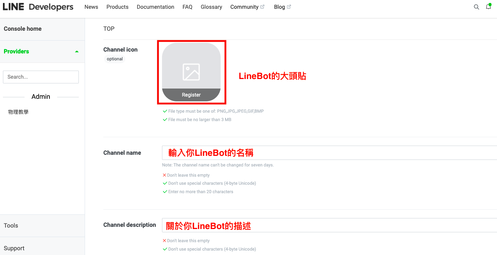
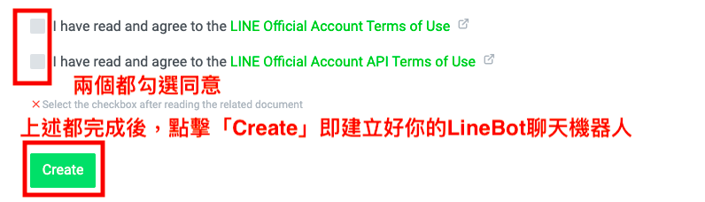

LineBot第一節課
2/16 2022
類別：程式教學
一、LineBot聊天機器人的運作原理
聊天機器人是經由對話或圖片和使用者進行交談的工具。我們課程的聊天機器人是透過Line平台建立，因此可將它稱為LineBot。
其運作原理如下圖所示，使用者在自己的Line界面輸入訊息後傳出，透過Messaging API將資訊透過撰寫的程式判讀，進而回應使用者訊息，或是將其資訊進行儲存，以便未來分析。
二、建立Line官方帳號
現在大家幾乎都已經有使用Line的服務，但在開發新的LineBot時，建議另外新增一個Line帳號，避免工作和私人領域混洧。
但較麻煩是是Line帳號的申請，只能以手機門號綁定，而手機門號通常都已綁定在自己的私人Line帳號。幸好還有一個方法能解決，就是申請Line的官方帳號。
官方帳號的申請是利用e-mail建立帳號，為了和原有的私人信箱作區別，可至google的首頁申請一個for LineBot開發的新信箱。
接著，我們至Line官方帳號管理平台申請帳號，連結如下:
https://tw.linebiz.com/login
點擊Line官方帳號管理頁面中的線上申請一般帳號，接著點擊使用商用帳號登入下方的建立帳號，並選擇以電子郵件帳號註冊，如下圖所示。
 三、建立LineBot和設定其Messaging API
建立好Line的帳號後，我們要使用其帳號開發一個LineBot。
我們要至到LINE Developers建立LineBot，連結如下:
https://developers.line.biz/zh-hant/
進到LINE Developers後，點擊Products中的Messaging API
進入後，點擊開始體驗進行相關設定。
此時會需要Line會員的登入，請點擊使用商用帳號登入，並使用剛申請Line官方帳號的電子郵件帳號及密碼進行登入。
登入成功後，網頁畫面應該如下圖，Create a new channel，需填寫的資料如下列1~10點所示。
1、Channel type請選擇Messaging API。
2、Provider請選擇Create a new provider。
3、於Enter the provider's name中，填入您的名字或想開的公司or店家名字。
*若尚未有圖，或不知如何繪製，可以利用線上免費的Canva平台設計屬於你的LineBot圖樣。
5、Channel name:填入你的LineBot顯示名稱(未來還能更換)。
6、Channel description:輸入你LineBot的描述，可以簡單寫它主要的功能為何 
7、於Category和Subcategory選擇符合你未來想開發LineBot的類別和子類別。
8、E-mail address: 填入你申請Line帳號時的電子郵件。
9、下方兩個URL皆先不用填。
10、最後，勾選兩項已閱讀和同意條款，且皆完成上述的填寫後，點擊Create，即建立好屬於你的LineBot聊天機器人。
